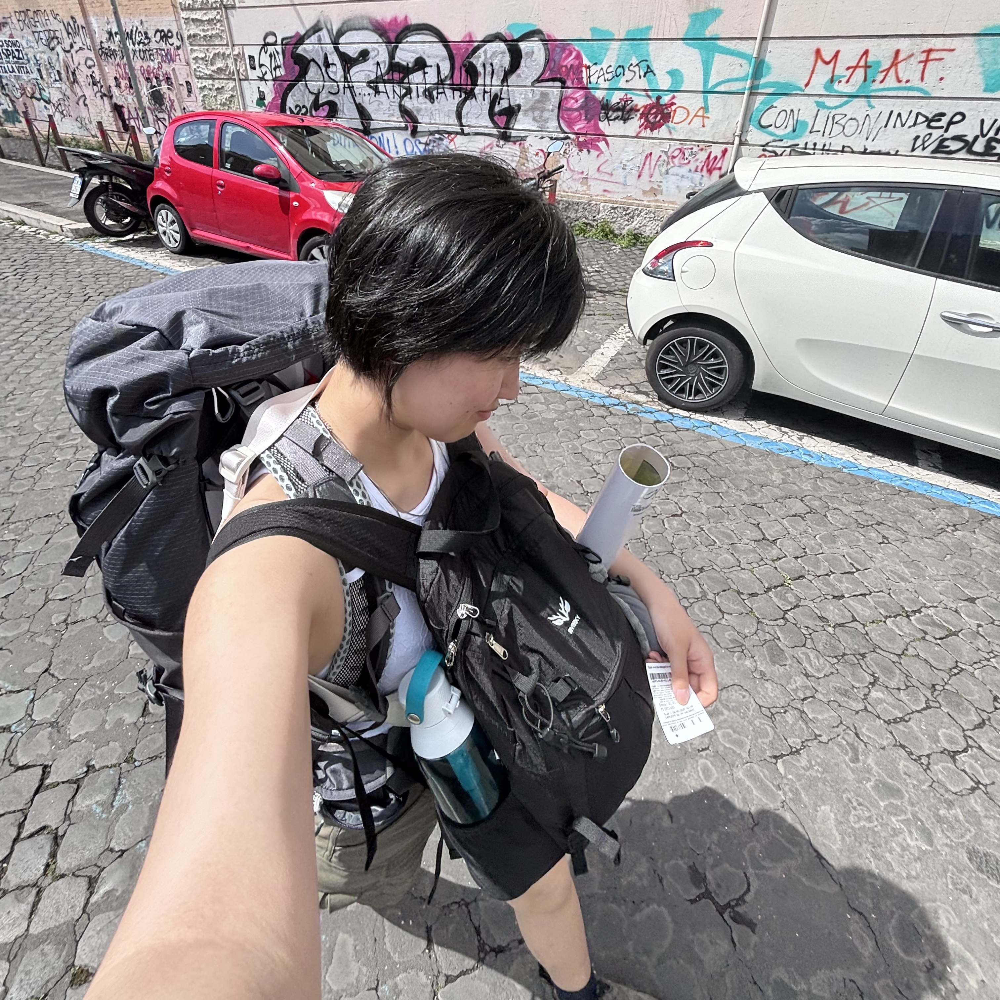

Hi, I'm Zoe Yu
University of Toronto Engineering Science 2T9
About Me
I am a first-year Engineering Science student at the University of Toronto with interests in cryptography, quantum chemistry, and the application of machine intelligence in both fields. Outside academics, I love solo backpacking and have travelled independently through Europe and China. On the right is picture of me in Rome, 2025 summer.

Languages
Technical Toolkit
Design Projects
Praxis I Project
CompletedDesigned and prototyped a practical solution using sustainable materials and low-cost manufacturing techniques, balancing functionality, feasibility, and user needs throughout the design process.
EWB Hackathon Project
CompletedDesigned a browser extension that improves web search by expanding queries across multiple languages and regions. Included content-type filters to help users find more relevant and diverse sources.
Praxis II Project
CompletedDesigned and prototyped an assistive filming system for a client with mobility impairments, combining ergonomic hardware, custom controls, and iterative user-centered design to improve accessibility and independence.